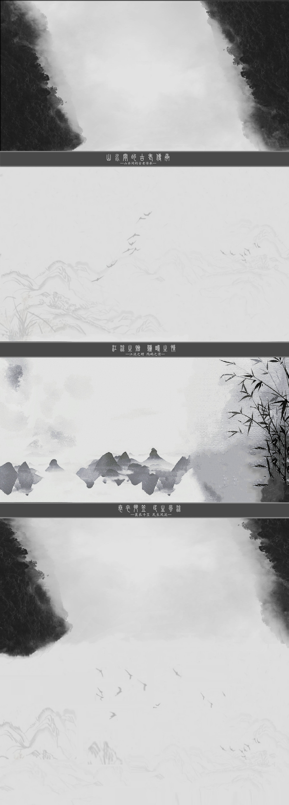
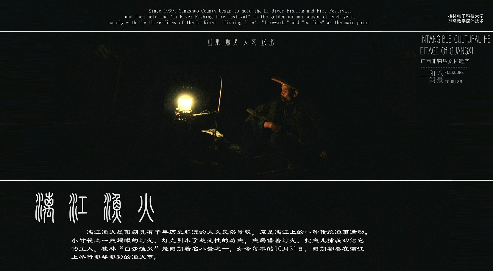
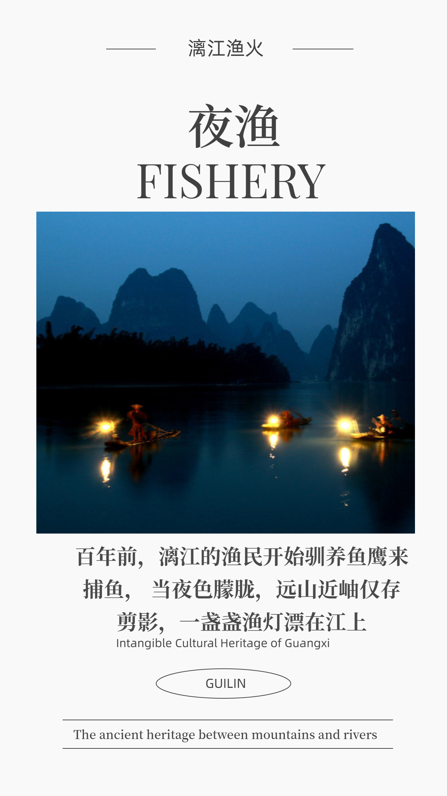

游渔记 八名景 山水栈 相关 点赞 收藏



百年前，漓江的渔民就开始驯养鱼鹰来捕鱼， 当夜色降临，鹚鹚在渔人的号令下，不断地在水面、水下翻飞、捕鱼，或三五小时，或通宵达旦，渔人总是要满载而归的。这种延续百年的捕鱼方式，便是阳朔八景之一的“白沙渔火”，又称“漓江渔火”。
清清的漓江水，川流不息，与之相依相伴的是漓江上盏盏渔火、一叶叶竹排，漓江渔火充盈诗情画意，载着昨天的故事，从远方走来。